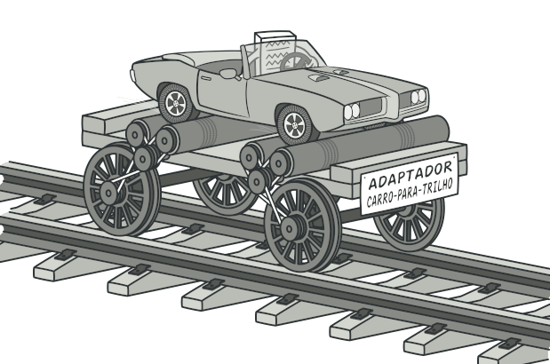
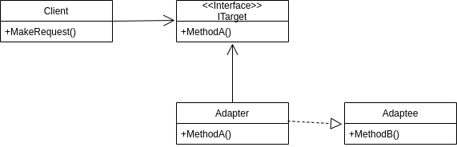
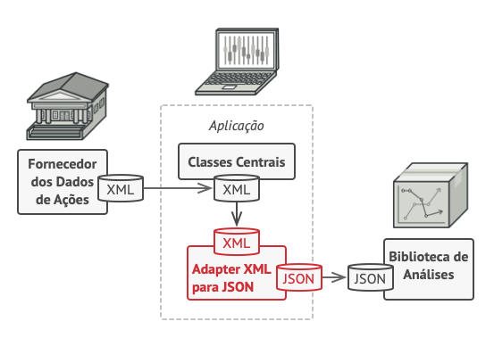
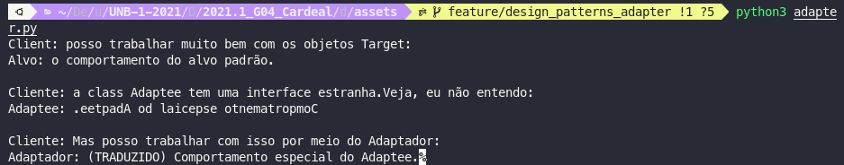
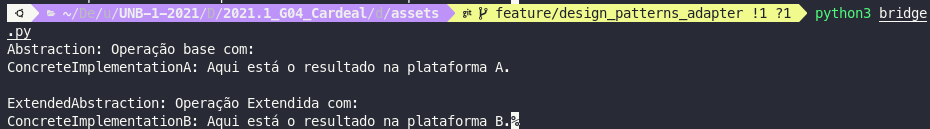

GoFs Estruturais
1. Introdução
Os padrões de projeto estrutural estão preocupados em como classes e objetos podem ser compostos, para formar estruturas maiores.
Os padrões de design estrutural simplificam a estrutura, identificando os relacionamentos.
Esses padrões se concentram em como as classes herdam umas das outras e como são compostas de outras classes.
Existem 7 tipos de padrões de projeto estruturais listados a seguir.
-
Padrão Adapter: Adaptação de uma interface em outra de acordo com a expectativa do cliente.
-
Padrão de Bridge: Separando abstração (interface) da implementação.
-
Padrão Compose: Permite que os clientes operem na hierarquia de objetos.
-
Padrão de Decorator: Adiciona funcionalidade a um objeto dinamicamente.
-
Padrão Facade: Fornece uma interface para um conjunto de interfaces.
-
Padrão Flyweight: Reutiliza um objeto compartilhando-o.
-
Padrão Proxy: Representa outro objeto.
2. Adapter
2.1. Introdução

Abstração da utilização de um Adaptador
Fonte: https://refactoring.guru/pt-br/design-patterns/adapter
2.2. Metodologia
O padrão Adapter foi estudado, porém ainda não encontramos necessidade de implementar de maneira direta no projeto. Mas caso seja necessário , a sua implementação seguirá o seu padrão característico, descrito na introdução de modo a preservar e ser possível identificá-lo de maneira clara no projeto.
2.3. Estrutura
Em outras palavras, o padrão Adapter que também é conhecido como Wrapper, fornece a interface de acordo com os requisitos do cliente ao usar os serviços de uma classe com uma interface diferente.
Vantagem do padrão de Adapter - Ele permite que dois ou mais objetos anteriormente incompatíveis interajam. - Ele permite a reutilização de funcionalidades pré-existentes.
É Adapter é usado:
- Quando um objeto precisa utilizar uma classe existente com uma interface incompatível.
- Quando você deseja criar uma classe reutilizável que coopere com classes que não possuem interfaces compatíveis.
- Quando você deseja criar uma classe reutilizável que coopere com classes que não possuem interfaces compatíveis.
Existem as seguintes especificações para o padrão do adaptador:
- Interface de destino(ITarget): Esta é a classe de interface que será usada pelos clientes para atingir sua solicitação.
- Classe do adaptador(Adapter): esta classe é uma classe de wrapper que implementa a interface de destino desejada e modifica a solicitação específica disponível na classe Adaptee.
- Classe Adaptee: Esta é a classe que é usada pela classe Adapter para reutilizar a funcionalidade existente e modificá-la para o uso desejado.
- Cliente: Esta é uma classe que interage com um tipo que implementa a interface ITarget. No entanto, a classe de comunicação denominada Adaptee não é compatível com o Client.

Diagrama UML de um Adaptador

Exemplo da utilização de um Adaptador
Fonte: https://refactoring.guru/pt-br/design-patterns/adapter
No figura anterior é mostrado a utilização de um adaptador XML -> JSON, para que seja possível utilizar os dados XML gerados pelo "Fornecedor de dados de ações" na "Biblioteca de Análises" que utiliza dados no formato JSON. Sem a utilização de um adaptador isso não seria possível. É função do adaptador sempre que receber os dados XML traduzi-los para JSON, o que permite a interação de duas interfaces que anteriormente eram incompatíveis.
2.4. Adapter aplicado ao projeto
O Padrão Adapter ainda não foi aplicado ao projeto. Mas logo abaixo um exemplo da utilização de um adapter implementado em python.

3. Composite
O padrão de projeto COMPOSITE é estrutural, permite que os objetos que fazem parte de uma relação parte-todo sejam agrupados e tratados da mesma forma. Compostos em estruturas de árvores. Esse padrão permite que os clientes usem os objetos individualmente ou em composições, ele é capaz de fazer as mesmas operações em uma agregação de objetos(todo) e em objetos individuais(parte).

Fonte: https://pt.wikipedia.org/wiki/Composite
3.1 Metodologia
A partir da reunião realizada no dia 17/09/2021 ficou decidido entre os membros do grupo que os padrões de projeto seriam explicados para fins didáticos para enriquecer a documentação e aumentar a compreensão do conteúdo nos participantes do trabalho.
3.2 Aplicação no projeto
Utilizando estrutura de árvore que é criada a partir de objetos, que podem conter vários métodos. Sendo visível no projeto ao se efetuar a criação de um objeto novo com mais de um método.
4. Bridge
4.1. Introdução
O padrão de projeto Bridge permite separar a abstração da implementação. Existem 2 partes no padrão de design do Bridge:
- Abstração
- Implementação
Este é um mecanismo de design que encapsula uma classe de implementação dentro de uma classe de interface. Isto é, desacopla a interface da implementação. Ocultando detalhes dos clientes/aplicações.
O padrão Brige permite que a Abstração e a Implementação sejam desenvolvidas de forma independente e o código do cliente pode acessar apenas a parte da Abstração sem se preocupar com a parte da Implementação.
A abstração é uma interface ou classe abstrata e o implementador também é uma interface ou classe abstrata.
A abstração contém uma referência ao implementador. Filhos da abstração são chamados de abstrações refinadas e filhos do implementador são implementadores concretos.
Uma vez que podemos alterar a referência ao implementador na abstração, somos capazes de alterar o implementador da abstração em tempo de execução. As alterações no implementador não afetam o código do cliente. Ele aumenta o acoplamento fraco entre abstração de classe e sua implementação.
4.2. Metodologia
A partir da reunião realizada no dia 17/09/2021 ficou decidido entre os membros do grupo que os padrões de projeto seriam explicados para fins didáticos para enriquecer a documentação e aumentar a compreensão do conteúdo nos participantes do trabalho.
O padrão Bridge foi estudado, porém ainda não encontramos necessidade de implementar de maneira direta no projeto. Mas caso seja necessário , a sua implementação seguirá o seu padrão característico, descrito na introdução de modo a preservar e ser possível identificá-lo de maneira clara no projeto.
4.3. Estrutura

Diagrama UML utilização de Bridge
fonte:wiki
- Abstração - núcleo do design pattern Bridge e define o ponto crucial. Contém uma referência ao implementador.
- Abstração refinada - estende a abstração, levando os detalhes mais finos um nível abaixo. Oculta os elementos mais sutis dos implementadores.
- Implementador - define a interface para as classes de implementação. Essa interface não precisa corresponder diretamente à interface de abstração e pode ser muito diferente. A abstração fornece uma implementação em termos de operações fornecidas pela interface do Implementador.
- Implementação concreta - implementa o implementador acima, fornecendo implementação concreta.
O padrão Bridge deve ser utilizado quando:
Você deseja evitar uma ligação permanente entre uma abstração e sua implementação. Pode ser o caso, por exemplo, quando a implementação deve ser selecionado ou alternado em tempo de execução.
• ambas as abstrações e suas implementações devem ser extensíveis por subclasses. Neste caso, o padrão Bridge permite combinar os diferentes abstrações e implementações e estendê-los de forma independente.
• mudanças na implementação de uma abstração não devem ter impacto sobre clientes; ou seja, seu código não deve ter que ser recompilado.
• (C ++) você deseja ocultar a implementação de uma abstração completamente de clientes. Em C ++, a representação de uma classe é visível na interface da classe.
• você tem uma proliferação de classes, conforme mostrado anteriormente na primeira Motivação diagrama. Essa hierarquia de classes indica a necessidade de dividir um objeto em duas partes. Rumbaugh usa o termo "generalizações aninhadas" [RBP + 91] para referem-se a tais hierarquias de classes.
• você deseja compartilhar uma implementação entre vários objetos (talvez usando contagem de referência), e este fato deve ser escondido do cliente. Um simples exemplo é a classe String de Coplien [Cop92], na qual vários objetos podem compartilhar a mesma representação de string (StringRep).
4.4. Bridge aplicado ao projeto
O Padrão Bridge ainda não foi aplicado ao projeto. Mas logo abaixo um exemplo da utilização de um Bridge implementado em python.

5. Decorator
O padrão de projeto estrutural Decorator permite que sejam acoplados comportamentos novos para objetos de maneira dinâmica. Decorators são uma alternativa flexível ao uso de herança estendendo funcionalidades.

Fonte: https://en.wikipedia.org/wiki/Decorator_pattern
5.1 Metodologia
A partir da reunião realizada no dia 17/09/2021 ficou decidido entre os membros do grupo que os padrões de projeto seriam explicados para fins didáticos para enriquecer a documentação e aumentar a compreensão do conteúdo nos participantes do trabalho.
5.2 Aplicação no projeto
O padrão Decorator não foi aplicado ao projeto.
6. Facade
7. Flyweight
O Flyweight(peso-mosca) é um padrão de projeto estrutural que é apropriado quando muitos objetos precisam ser manipulados em memória RAM e possuem informações repetidas. Os objetos compartilham partes comuns do estado, em vez de manter todos os dados em cada objeto. Otimizando o uso de memória.

Fonte: https://refactoring.guru/pt-br/design-patterns/flyweight
7.1 Metodologia
A partir da reunião realizada no dia 17/09/2021 ficou decidido entre os membros do grupo que o padrão Flyweight seria estudado. Porém, conforme o escopo do projeto foi definido não foi visualizada a necessidade de implementação do padrão.
7.2 Aplicação no projeto
O padrão Flyweight não foi aplicado ao projeto.
8. Proxy
8.1. Introdução
O padrão de projeto estrutural Proxy, é um padrão de projeto no qual uma classe irá funcionar de interface para outra coisa. Sendo assim, o Proxy pode fazer interface com praticamente qualquer coisa, desde uma conexão de rede a um arquivo.
8.2. Metodologia
O padrão Proxy foi estudado, porém não está implementado de maneira direta no projeto. Mas se sim, a sua implementação seguiria o seu padrão característico descrito na introdução de modo a preservar e ser possível identificá-lo de maneira clara no projeto.
8.3. Estrutura
A abordagem do Proxy é feita do seguinte modo e seguindo os seguintes parâmetros, o Proxy é um objeto wrapper que está sendo chamado pelo cliente para acessar o objeto de serviço real. Ao se chamar o Proxy, pode se encaminhar direto para o uso do serviço real ou oferecer uma lógica adicional, complementar aquele objeto, antes de propriamente encaminhar para ele, podendo fornecer um substituto ( ou placeholder ), adiciona nível extra de indireção e adicionar um agregador para proteger o componente real de complexidade indevida.

8.4. Proxy aplicado ao projeto
O padrão proxy não foi aplicado ao projeto.
9. Referências
Padrões de Projeto Proxy. Disponível em: https://pt.wikipedia.org/wiki/Proxy_(padr%C3%B5es_de_projeto). Acessado em: 18/09/2021
Padrões de Projeto Proxy. Disponível em: https://refactoring.guru/pt-br/design-patterns/proxy/java/example. Acessado em: 18/09/2021
"The Adapter design pattern - Problem, Solution, and Applicability". Disponível em: http://w3sdesign.com/?gr=s01&ugr=proble. Acessado em: 18/09/2021.
"Adapter Pattern". Disponível em: http://w3sdesign.com/?gr=s01&ugr=struct. Acessado em: 18/09/2021.
"The Adapter Pattern". Disponível em: https://refactoring.guru/pt-br/design-patterns/adapter. Acessado em: 18/09/2021.
"The GoF Design Patterns Reference". Disponível em: http://w3sdesign.com/GoF_Design_Patterns_Reference0100.pdf. Acessado em: 18/09/2021.
Arquitetura e Desenho de Software - Aula GoFs Estruturais. Disponívem em: https://aprender3.unb.br/pluginfile.php/897142/mod_label/intro/Arquitetura%20e%20Desenho%20de%20Software%20-%20Aula%20GoFs%20Estruturais%20-%20Profa.%20Milene.pdf. Acessado em: 18/09/2021
Padrões de Projeto Composite. Disponível em: https://pt.wikipedia.org/wiki/Composite. Acessado em: 18/09/2021
Padrões de Projeto Decorator. Disponível em: https://en.wikipedia.org/wiki/Decorator_pattern. Acessado em: 18/09/2021
Padrões de Projeto Composite. Disponível em: https://pt.wikipedia.org/wiki/Flyweight. Acessado em: 18/09/2021
Padrões de Projeto Estruturais. Disponível em: https://refactoring.guru/pt-br/design-patterns/structural-patterns. Acessado em: 19/09/2021
Arquitetura e desenvolvimento de software — Parte 8 — Composite. Disponível em: https://medium.com/@gbbigardi/arquitetura-e-desenvolvimento-de-software-parte-8-composite-9d342d641a4a. Acessado em: 19/09/2021
Arquitetura e desenvolvimento de software — Parte 8 — Composite. Disponível em: https://medium.com/@gbbigardi/arquitetura-e-desenvolvimento-de-software-parte-8-composite-9d342d641a4a. Acessado em: 19/09/2021
Gamma, Erich; Richard Helm, Ralph Johnson, John M. Vlissides . Design patterns: elements of reusable objectoriented software. Reading: Addison-Wesley, c1995. 395 p.
SERRANO, Milene. Arquitetura e Desenho de Software: Aula GoFs Estruturais, disponível em: aprender3.unb (último acesso: dia 19 de setembro de 2021).
Design Patterns: The Bridge Pattern. Disponível em: https://www.informit.com/articles/article.aspx?p=30297. Acessado em: 19/09/2021
Design Patterns - Bridge Pattern. Disponível em: https://www.tutorialspoint.com/design_pattern/bridge_pattern.htm. Acessado em 19/09/2021.
Bridge Design Pattern. Disponível em: https://www.geeksforgeeks.org/bridge-design-pattern/. Acessado em 19/09/2021.
10. Versionamento
| Data | Versão | Descrição | Autores |
|---|---|---|---|
| 30/08/2021 | 0.1 | Criação do arquivo | Estevao Reis |
| 17/09/2021 | 0.2 | Estruturação do Arquivo | Estevao Reis |
| 19/09/2021 | 0.3 | Adição do Padrão Proxy | Luiz Gustavo |
| 19/09/2021 | 0.4 | Adição da Introdução | Gustavo Moreira |
| 19/09/2021 | 0.5 | Adição dos padrões Composite, Decorator e Flyweight | Gustavo Moreira |
| 19/09/2021 | 0.6 | Adição Introdução, Adapter e Bridge Pattern | Marcos Vinícius |
| 19/09/2021 | 0.7 | Revisão | Bruno, Marcos, Luiz, Tomás, Gustavo, Igor, Estevão, Giovana |